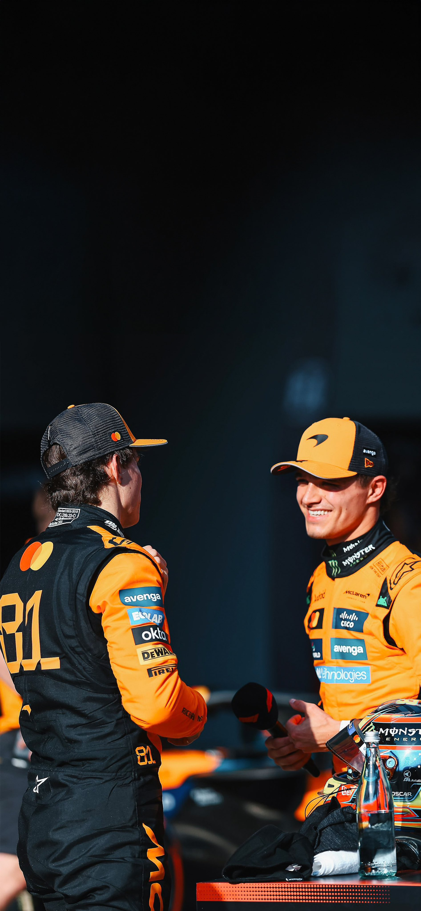

Sunday Race
Oscar Piastri bounced back from the disappointment of his late-race mistake at last week’s 2025 season opener in Australia by converting pole position into an assured victory during the Chinese Grand Prix – leading home team mate Lando Norris for a McLaren 1-2.
Starting
Piastri controlled Sunday’s 56-lap encounter at the Shanghai International Circuit from start to finish, never putting a foot wrong in a much calmer second race of the campaign that centred around whether drivers would complete one or two pit stops.
As it transpired, the first five finishers – and the vast majority of the field – only visited the pits once, with Piastri building and managing a gap back to Norris across their two stints to take the chequered flag and kick off his challenge for the title.
Norris hovered around three seconds behind Piastri in the closing stages, when he encountered a developing brake problem and was told to take no risks by the McLaren pit wall – just about ensuring the papaya outfit emerged with that perfect finish.
FORMULA 1 HEINEKEN CHINESE GRAND PRIX 2025
Race results
| Position | Team Name | Time | Points |
|---|---|---|---|
| 1 | Oscar Piastri (McLaren) | 1:30:55.026 | 25 |
| 2 | Lando Norris (McLaren) | +9.748s | 18 |
| 3 | George Russell (Mercedes) | +11.097s | 15 |
| 4 | Max Verstappen (Red Bull Racing) | +16.656s | 12 |
| 5 | Esteban Ocon (Haas) | +49.969s | 10 |
After dropping behind at the start, Russell did his best to make life difficult for Norris as the afternoon wore on, briefly reclaiming second during the pit stop phase, but the McLaren man had enough pace in hand to take P2, even with his late brake dramas.
Max Verstappen predicted a difficult race for Red Bull after their Sprint struggles, and he finished where he started in fourth, a few seconds ahead of Ferrari drivers Charles Leclerc and Lewis Hamilton, who dramatically made contact on the opening lap.
Leclerc raced on with a damaged front wing, deciding not to change it in the pits, while Hamilton was the only frontrunning driver to complete a two-stop strategy – a series of fastest laps not quite enough to make up for the time he had lost swapping tyres again.
Esteban Ocon was a brilliant seventh for Haas after their tough start to 2025, followed by the other Mercedes of Kimi Antonelli, the lead Williams of Alex Albon and team mate Ollie Bearman, who denied Alpine’s Pierre Gasly and Aston Martin’s Lance Stroll points.
A period of adaptation for Carlos Sainz at Williams continued as he placed 13th, with Racing Bulls’ Isack Hadjar 14th after making two stops and getting involved in a late incident with Jack Doohan, for which the Alpine rookie was penalised.
Liam Lawson took a lowly 15th in his Red Bull, from Doohan, the struggling Kick Saubers of Gabriel Bortoleto and Nico Hulkenberg and the Racing Bulls car of Yuki Tsunoda, who had to pit a third time due to front wing damage, while Aston Martin racer Fernando Alonso retired early on amid brake trouble.
There was drama post-race, however, with Leclerc and Gasly being disqualified over car weight breaches, and Hamilton suffering the same fate due to his car’s plank assembly coming in below the permitted minimum thickness.
While serving as a particularly bitter blow for the Ferrari drivers and their championship prospects, it promoted Ocon, Antonelli, Albon and Bearman up the top-10 order, and moved Stroll and Sainz into the points places.